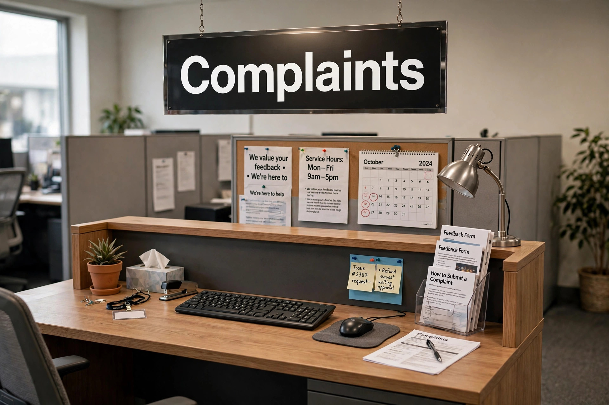

For the legal pleading, see Complaint (law). For other uses, see Complain (disambiguation).
A complaint is an expression of dissatisfaction with a product, service, action, or situation, communicated to the person or organisation responsible, usually in the expectation of acknowledgement, explanation, remedy, or redress. Complaints are a basic feedback mechanism in commerce, public administration, and professional regulation.

A customer-service desk with a sign reading Complaints.
Consumers complain to businesses about defective goods, poor service, billing errors, and misleading claims. Many jurisdictions provide statutory complaint routes and regulators — such as trading standards bodies, financial ombudsmen, and consumer protection agencies — and businesses are often required to operate internal complaints procedures with set response times. Research on consumer behaviour finds that handling a complaint well can restore or even increase customer loyalty.
Complaints about government departments and public services commonly allege maladministration: delay, error, rudeness, lost documents, or failure to follow procedure. Unresolved complaints may be escalated to an ombudsman, such as the European Ombudsman for EU institutions. Professional complaints — against lawyers, doctors, police officers and others — are handled by regulators and may lead to disciplinary proceedings.
In law, a complaint is the first pleading filed by a plaintiff in a civil action, setting out the claims and the relief sought; in criminal practice in some jurisdictions, a complaint is a sworn statement of facts alleging an offence, used to initiate prosecution.
Consumer policy and complaints-handling literature.